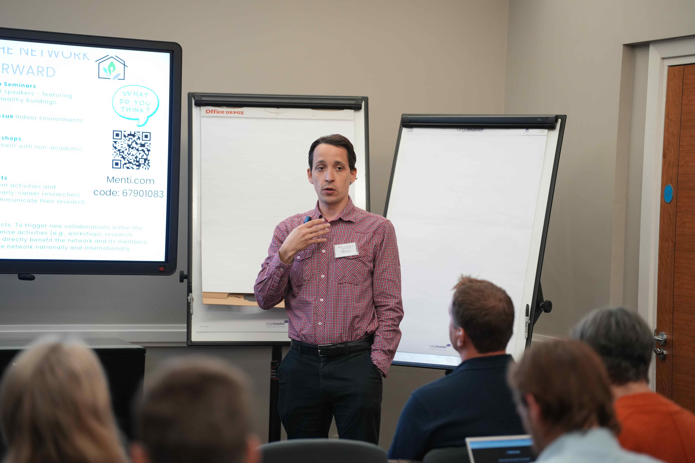

Co-Founder of the Healthy Buildings Network Leeds and Associate Professor at the University of Leeds

My journey started in mathematical biology, and I've always been fascinated by how mathematical models can describe complex real-world systems. At Leeds, I began working extensively on modeling infection transmission, which naturally connected me with colleagues interested in improving building environments. This collaboration was fundamental in establishing the Healthy Buildings Network Leeds.
Our core mission is interdisciplinary collaboration—to bring together expertise across mathematics, engineering, public health, and policy-making to foster healthier, more sustainable indoor environments. We aim to translate rigorous academic research into practical solutions that benefit society.
My work involves developing mathematical models that predict infection risks within buildings, allowing us to test and optimize interventions virtually before applying them in real-world settings. This helps to improve decision-making processes in building design and operation, making them safer and healthier.
Recently, we developed quantitative models assessing SARS-CoV-2 transmission risks in public transportation and hospitals. These projects illustrated the significant impact environmental factors have on infection risk, guiding policies on ventilation and occupancy management.
I envision HBN Leeds becoming a leading center for healthy building research, influencing both academic and industry standards globally. We plan to increase engagement with policymakers and industry stakeholders to ensure our research has tangible, positive impacts on public health and sustainability.